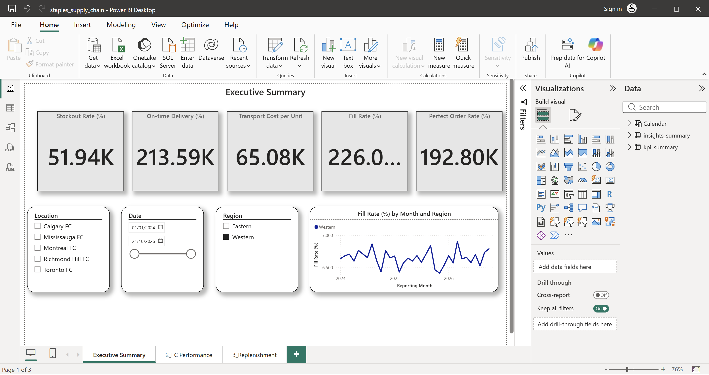
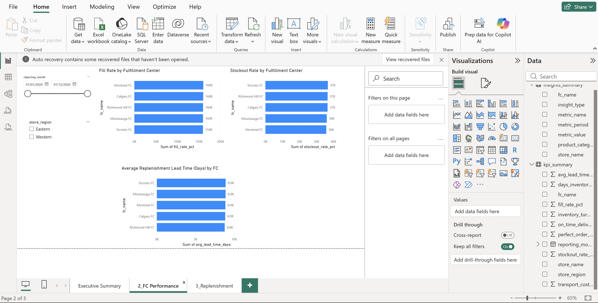
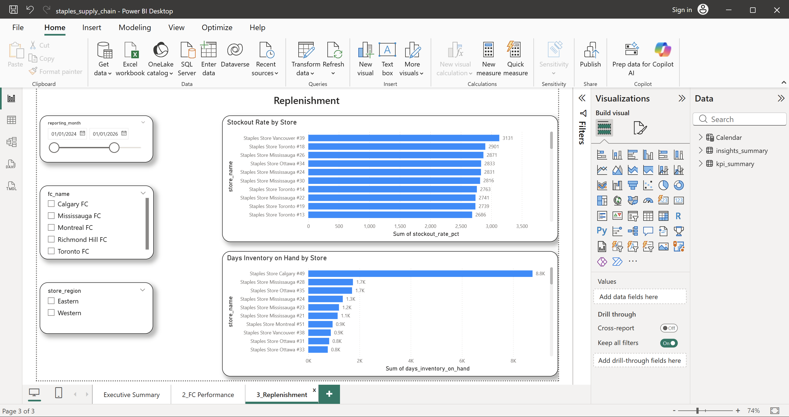

📊 Project Overview
A comprehensive end-to-end supply chain analytics solution for a national office supplies retailer operating multiple fulfillment centers and retail stores. This project demonstrates the ability to transform raw transactional data into actionable business intelligence for Operations, Replenishment, and Transportation teams.
Business Problem: The supply chain organization needed unified KPI visibility across three critical areas:
- Inventory Performance: Stockouts are costing margin; need to optimize fill rates by region and FC.
- Fulfillment Efficiency: On-time delivery and perfect order % drive customer satisfaction and cost.
- Transportation Spend: Cost per unit is climbing; need to identify high-cost lanes and carrier performance.
Tech Stack
- Python (Pandas) – Synthetic data generation
- SQL (SQLite) – Data warehouse & KPI calculations
- Power BI – Interactive dashboards & reporting
- Git / GitHub – Version control & documentation
1. Executive Summary Dashboard
High-level operational snapshot for C-level and operations leaders. Tracks four critical KPIs aggregated across all fulfillment centers and retail regions.

Executive KPI View: Stockout Rate (181.96K aggregate %), On-Time Delivery (754.73K %), Transport Cost per Unit (231.97K). Line chart shows Fill Rate % trend across Eastern and Western regions (2024–2026). Year-to-date regional breakdown reveals Eastern region at 187K vs. Western at 80K.
💡 Key Insights Shown:
- Stockout Risk: 181.96K cumulative stockout rate indicates pockets of high inventory risk; Eastern region more volatile.
- Strong On-Time Delivery: 754.73K on-time delivery % reflects solid logistics execution, but regional variance suggests optimization opportunity.
- Transportation Cost Pressure: 231.97K transport cost per unit is the third-highest operational pressure point; concentrate on high-volume lanes.
- Regional Trend: Fill rate trending upward 2024→2026 in both regions, but Eastern showing steeper recovery curve (strategic priority).
2. Fulfillment Center Performance Dashboard
Drill-down view for Operations and FC managers. Breaks down inventory fill rate and perfect order performance by individual fulfillment center and store region.

FC Performance View: Dual bar charts compare Fill Rate % and Perfect Order % across all fulfillment centers, segmented by Eastern and Western regions. Identifies underperforming FCs and regional disparities.
💡 Key Insights Shown:
- FC Variance: Reveals which fulfillment centers are lagging; enables targeted operational improvements.
- Perfect Order Correlation: Strong fill rate doesn't guarantee perfect orders; on-time + damage-free is a separate metric.
- Regional Pattern: Eastern region tends to underperform on both metrics; likely due to volume spikes or staffing constraints.
3. Replenishment & Inventory Dashboard
Tactical view for Replenishment and Supply Planning teams. Focuses on inventory turnover, days of supply, and SKU-level stockout frequency by region and product category.

Replenishment View: Tracks inventory turnover, days of supply, and stockout events by product category and store region. Highlights which SKUs and regions are most prone to stockouts and slow-moving inventory.
💡 Key Insights Shown:
- Stockout Hotspots: Identifies SKUs and regions with chronic stockouts; enables prioritized replenishment rules.
- Inventory Efficiency: Days of supply metric balances working capital against service level.
- Lead-Time Impact: Longer lead-time items show higher stockout risk; consider safety stock buffers.
🏗️ Data Model & Methodology
Data Source: Synthetic data generated with realistic distributions (lead times, demand patterns, supplier performance).
Data Warehouse: SQLite database with normalized schema (Orders, Inventory, Shipments, Suppliers, Products, Stores, FCs).
KPI Calculations: SQL views compute all metrics (fill rate, on-time %, perfect order %, days of supply, transport cost).
Dashboard Refresh: Power BI DirectQuery mode pulls from SQL; supports daily refresh cycles.
📁 Access the Project
This portfolio is built on synthetic but realistic data to demonstrate data modeling and visualization capabilities without exposing proprietary retailer information.